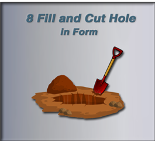

~8 Fill and Put Hole in Form~
10/13/2025
Creating the Circle for the Hole
Making the Hole Appear in the Shape

Starting Point
We should be here now with our shape, if you have been following along from our last tutorial.
One of the advantages to adding a segment to close the curve (as we did at the end of the last tutorial), instead of just merging the vertices at the bottom, is that it allows us to fill this shape, and make it appear solid.
Filling this shape is exactly what we are trying to do in this tutorial, so blending the two curves together in the way that we did, works perfectly for us.
Change Shape to 2D Mode
But before we can fill the shape, we are going to need to change our shape to 2D mode, this will further enable us to fill the Shape. If you were to leave the shape in a 3D mode, you will notice that we will be unable to fill it in the manner that we will be using.
We have a few options for Fill Mode. But Front will work fine for us. So, go ahead and choose this option from the drop-down.
Now our shape is filled.
Go into Outline Mode
To get into outline mode, we need to go to the top of the viewport and click on this button here. As indicated in the image below.
In outline mode, your shape should now look like this.
The Property Panel
We can then come over the Property panel for Curve, and temporarily turn off Fill.
Now our shape should look like this.
Creating the Circle for the Hole
Now select these two points here.
Now hit Shift -S and select Cursor to Selected.
Your Cursor should now be between those two points that we had selected.
Now Hit Shift and A and then add a circle right in the middle where the cursor is now located.
Your shape should now have a circle in it. I used the mouse wheel to zoom in on this portion of the shape.
Hit the S key, and Scale this circle down a bit.
Ok, since we have a circle or a shape inside of our shape. Blender will automatically detect a counter space relationship. In other words. Blender will assume you are wanting to cut a hole in your shape.
Come out of Wire mode, and go back to Solid Mode.
Making the Hole Appear in the Shape
All we have to do, to see our hole appear in the shape, is to come back to our Property Panel on the right-hand side of the Viewport, and turn back on that Front option for Fill Mode.

And notice now that you do indeed have that hole in your shape.
Next week, we will be doing something just a bit different. Instead of working on this shape here. We will create a teacup. But we will be doing that using the Curve Pen Tool.